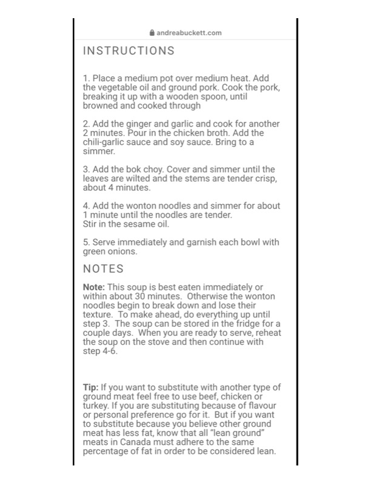

@ andreabuckett.com

Original cookbook page 569
Ingredients
- 2 minutes. Pour in the chicken broth. Add the
- 1 minute until the noodles are tender.
Instructions
- Place a medium pot over medium heat. Add the vegetable oil and ground pork. Cook the po breaking it up with a wooden spoon, until browned and cooked through
- Add the ginger and garlic and cook for anott 2 minutes. Pour in the chicken broth. Add the chili-garlic sauce and soy sauce. Bring to a simmer.
- Add the bok choy. Cover and simmer until th leaves are wilted and the stems are tender cris about 4 minutes.
- Add the wonton noodles and simmer for abc 1 minute until the noodles are tender. Stir in the sesame oil.
- Serve immediately and garnish each bowl wi green onions. NOTES Note: This soup is best eaten immediately or within about 30 minutes. Otherwise the wonto noodles begin to break down and lose their texture. To make ahead, do everything up until step 3. The soup can be stored in the fridge fo couple days. When you are ready to serve, reh the soup on the stove and then continue with step 4-6. Tip: If you want to substitute with another type ground meat feel free to use beef, chicken or turkey. If you are substituting because of flavot or personal preference go for it. But if you war to substitute because you believe other ground meat has less fat, know that all "lean ground" meats in Canada must adhere to the same percentage of fat in order to be considered lea
Recipe #569 from collection